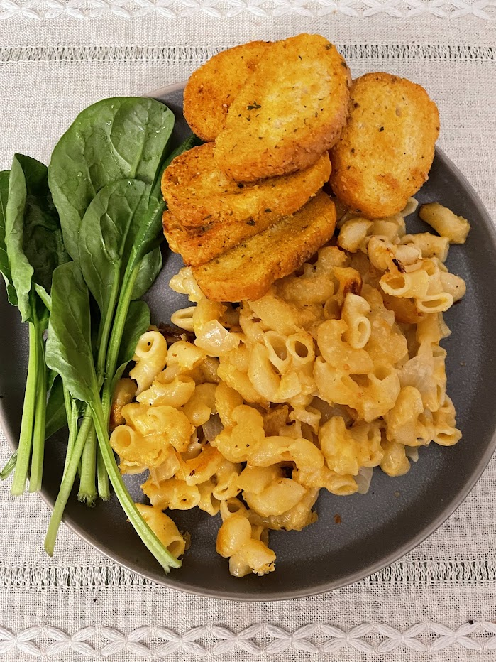

Mac and cheese

Macaroni and cheese is very greasy and heavy, so you may want to serve it with a green vegetable
Ingredients
- 1 pound macaroni
- Butter
- 2 white or yellow onions
- Flour
- Salt
- Pepper
- Milk
- 1 pound cheddar cheese
- Gruyère or some other slightly fancy cheese, like Swiss (optional)
- Smoked paprika or regular paprika (optional)
Instructions
Cook and drain macaroni. Dice onions and cook them in a few tablespoons of butter until they are soft and transparent, then add a few spoonfuls of flour. Stir until the butter and flour are evenly mixed and are starting to darken. Add the salt and pepper and milk, then stir constantly until the roux is dissolved in the milk and the milk is significantly thickened. Cut cheese into cubes, then throw it in the sauce and stir until the cheese is thoroughly mixed in. You should use block cheese instead of pre-shredded cheddar, because pre-shredded cheddar comes with cellulose as an anti-caking agent. Stir in a bit of paprika, but not too much, or else the sauce will look articially orange. Mix the pasta and the cheese sauce, then broil that mixture until the top is slightly darkened and crisped. Right before eating, sprinkle a bit more paprika on top.
Notes
This recipe intentionally uses the oven's heat to make the cheese sauce break, forming a slightly grainy and greasy sauce, which I love. This is a matter of personal preference -- most people prefrer unbroken sauces, and if you're one of those people, just mix the pasta with the cheese sauce but don't bake it. If you want to learn more about broken emulsifications and how to make a super smooth mac and cheese sauce, see Adam Ragusea's youtube ideo about How and why sauces 'break' (or don't)